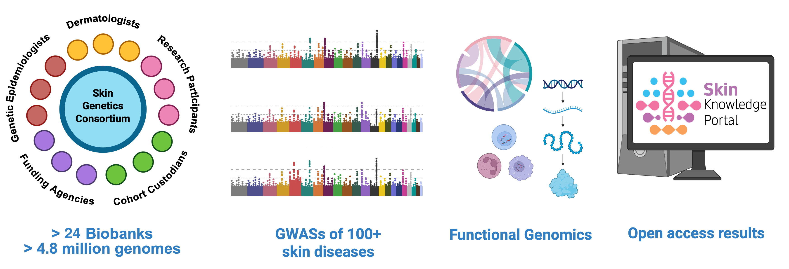

Welcome to the Skin Genetics Consortium
We are a dedicated scientific community focused on understanding the genetic mechanisms that underlie skin diseases and traits. By leveraging population scale genomic research, our mission is to drive advances in skin science that pave the way for improved diagnostics and targeted therapies.
Genetics plays a central role in shaping the biological mechanisms of the skin in health and disease. The study of genetics helps us understand how variation in skin biology arises and how this influences the development of skin conditions and how they progress. This knowledge is not only key to identifying risk factors but also to designing personalized treatments that can significantly improve patient outcomes.
The Skin Genetics Consortium brings together scientists from around the world to share insights, collaborate on pioneering projects, and ultimately transform the landscape of skin health.

Publications
Read more about our consortium's aims here: Petukhova et al(2026),British Journal of Dermatology